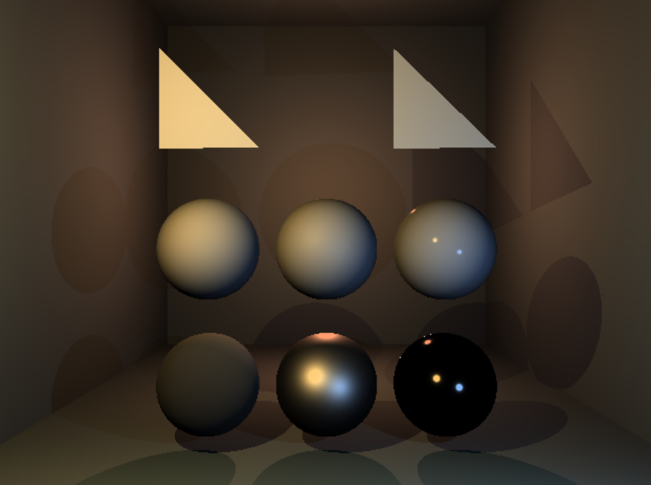
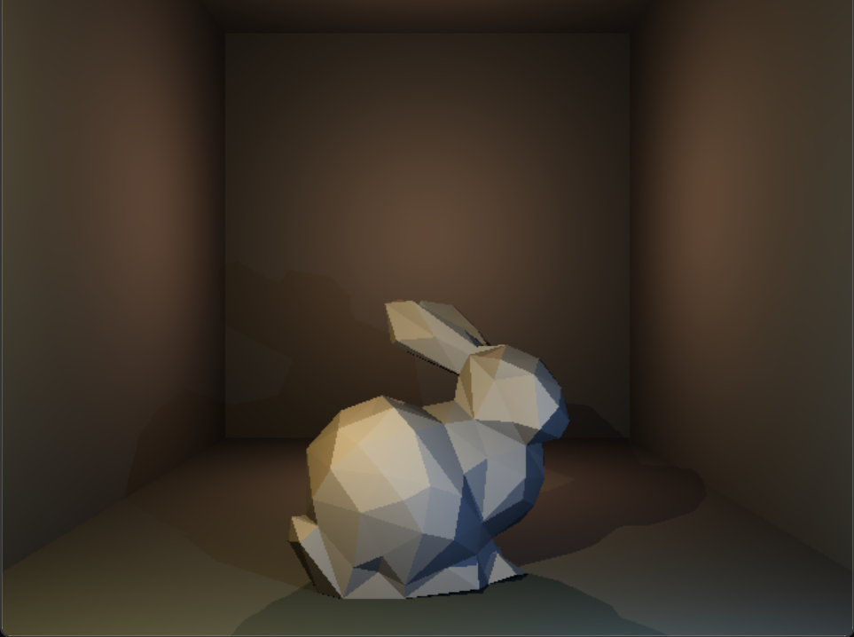
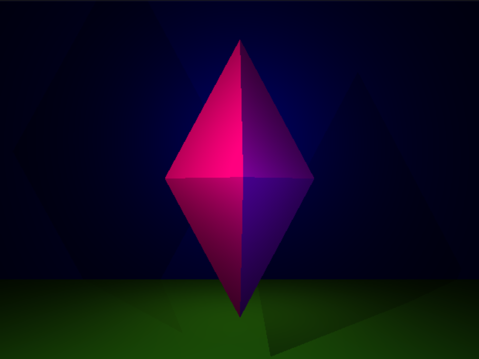

Accelerated Raytracer
Overview
The retake project for Graphics Programming 1 @ Digital Arts & Entertainment.
Raytracing Maths
To implement raytracing, we needed to apply several key mathematical concepts like:
- Vector Math: Extensive use of vector operations like addition, subtraction, dot products, and cross products to represent and manipulate 3D points, directions, and normals.
- Ray-Primitive Intersection: Calculating the intersection point between a ray and various geometric primitives like spheres, planes, and triangles. This required solving quadratic equations and other geometric calculations.
- Lighting Calculations: Computing the contribution of direct lighting, ambient lighting, and checking whether the pixel is in shadow to determine the final color of a pixel. This involved dot products, exponential functions, and color blending.
Bounding Volume Hierarchy (BVH)
The BVH is a tree-based acceleration structure used to speed up raytracing by reducing the number of ray-primitive intersection tests. It works as follows:- Construct the BVH: The scene geometry is recursively split into axis-aligned bounding boxes (AABBs) to create a binary tree structure. The split axis and position are chosen to minimize the total volume of the child AABBs.
- Traverse the BVH: When tracing a ray, we traverse the BVH tree, testing the ray against the AABBs. If the ray intersects an AABB, we continue down that branch of the tree. If not, we can skip that entire subtree.
- Optimize Traversal: Several techniques are used to optimize BVH traversal, such as:
- Ray-AABB intersection: Efficiently testing the ray against the AABBs using the slab method.
- Early ray termination: Stopping the traversal as soon as we find a valid intersection.
Features
- Accelerated Rendering using a BVH
- Toggling lighting modes: Use F3 to toggle between different lighting modes.
- FPS Benchmark: Use F6 to perform a FPS benchmark, this gets saved in benchmark.txt.
Controls
- F3: Toggle between different lighting modes.
- F6: Perform Benchmark.
Technologies Used
Screenshots

The reference scene

Rendering the Stanford Bunny

A custom scene